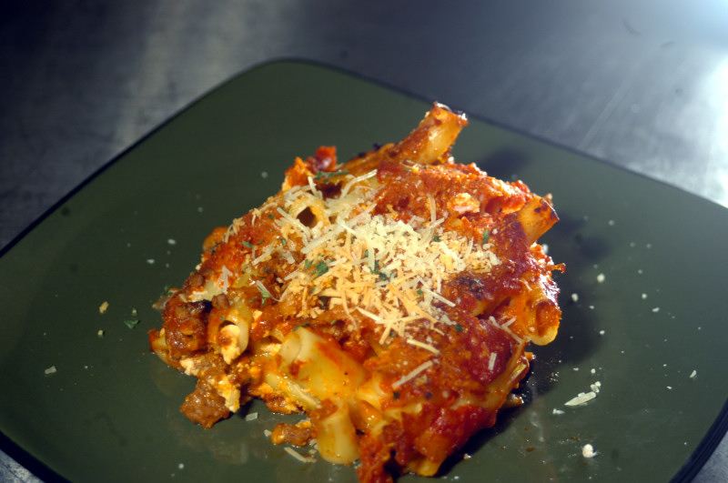

Baked Ziti

Baked Ziti al Forno
This is the baked ziti recipe that my family loves. It is one of our
favorite dishes, and is so easy to make!
Ingredients
- 1lb Ziti Pasta
- 4 cups Marinara
- 2 cups Alfredo
- 1/2 cups Ricotta cheese
- 1/2 cups Fontina cheese - shredded
Topping
- 1/2 cup panko breadcrumbs
- 2 cups mozzarella cheese - shredded
- 1/4 cup romano cheese - grated
- 1/4 cup parmesan cheese - grated
- 2 cloves garlic - minced
Cooking Instructions
- Preheat oven to 375 degrees Farenheit
-
Cook the pasta one minute shy of the directions on the box and drain
-
In a large metal bowl add the pasta, marinara sauce, alfredo sauce,
ricotta cheese and fontina cheese and mix well
- Add to a large oven safe skillet or 9x13 pan
-
ix the mozzarella, panko, romano, parmesan and garlic together and add
the topping over the pasta
- Bake for 30-35 minutes uncovered until golden brown and bubbly
Back to Home